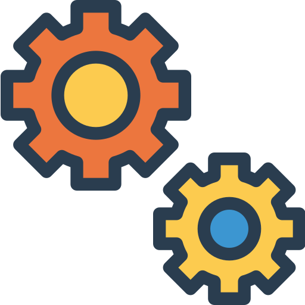
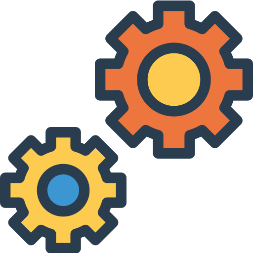

PERFIL
Inicié mi trayectoria profesional en este sector en el año 2020, momento en el cual tomé la decisión de matricular la carrera de Ingeniería Informática en la Universidad Estatal a Distancia de Costa Rica (UNED), tras investigar entre las distintas ramas disponibles formé una atracción por el desarrollo de páginas y aplicaciones web.
Gracias a la alianza entre la empresa de tecnología ORACLE y el grupo educativo ALURA Latam, se me brindó la oportunidad de adquirir una beca para iniciar mi formación específica en este apasionante mundo del desarrollo Full Stack a través del Programa Oracle Next Education (ONE).
Oracle financia el programa y la plataforma Alura Latam, imparte a través de instructores con amplia experiencia y conocimiento, las formaciones necesarias para la capacitación de desarrolladores que ayuden a suplir la creciente necesidad de profesionales en el sector.
PROYECTOS
Portafolio de Proyectos
Sitio web en donde se muestra el perfil del desarrollador Jossué Sanabria, los proyectos desarrollados por él, así como su formación académica, resultado de su formación en ONE - Oracle Next Education y formaciones complementarias.
Ir al Proyecto
Proyecto Barbería
Un sitio web desarrollado en el programa ONE, en la cual creamos la página web de una barbería, mostrando información sobre la barbería, la ubicación de esta, aspectos o características diferenciales y un vídeo relacionado.
Ir al Proyecto
Encriptador de Texto
Un sitio web en donde desarrollado en conjunto con la plataforma de aprendizaje Alura, en conjunto con el programa ONE, una herramienta de encriptado de mensajes de texto, así como su correspondiente herramienta de desencriptado.
Ir al Proyecto
Tienda de Cursos
Mini tienda de la plataforma de aprendizaje Alura, donde se ofrecen cursos de lenguajes de programación, un vídeo introductorio con las ventajas de estudiar en ella, un mapa de cursos con una ruta formativa y los aliados que respaldan.
Ir al Proyecto
Tienda de Videojuegos
Una tienda de videojuegos, en donde se pueden encontrar algunos de los más reconocidos videojuegos, los juegos y aplicaciones más populares con una breve descripción, algunos destacados y algunas novedades y su fecha de lanzamiento.
Ir al Proyecto
Proyecto Apeperia
Un empresa de diseño de aplicaciones personalizadas en diversas plataformas de desarrollo, con planes de mantenimiento, sus diferenciales (distinción de su trabajo) sus medios de contacto y un vídeo explicativo de su forma de trabajo.
Ir al Proyecto
Lista de Tareas TO-DO
Una práctica herramienta de planificación de tareas pendientes (varias) de realizar, un TO DO, la cual permite marcar como completadas las tareas realizadas, eliminar las tareas que ya no se deben realizar y su respectiva actualización.
Ir al Proyecto
Formulario PetShop

Herramienta con la funcionalidad de formulario de contacto entre el usuario y la PetShop, cada campo del formulario cuenta con una validación de la información ingresada, con el propósito de que la información esté lo más completa posible.
Ir al Proyecto
FORMACIÓN
- 
Desarrollador Front-End (Html5 | CSS3 | Javascript) y Back-End (Java | MySQL)
ONE - Oracle Next Education Program - Alura
São Paulo, Brasil
2022 - Proceso
- 
Bachillerato en Ingeniería Informática
Universidad Estatal a Distancia (UNED)
San José, Costa Rica
2021 - Proceso
Programa Skills4Life: Inglés para la Empleabilidad
MTSS · Cinde · Fundación Aliarse
San José, Costa Rica
2021 - 2022
Programa Skills4Life: Habilidades Socioemocionales para el Trabajo
MTSS · Cinde · Fundación Aliarse
San José, Costa Rica
2021 - 2022